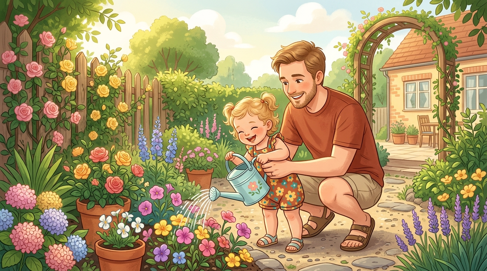
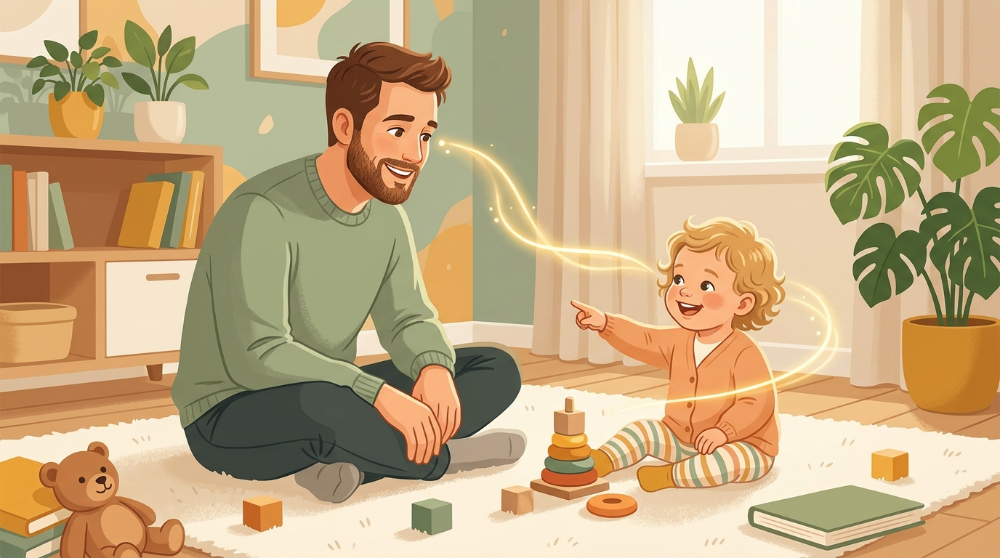
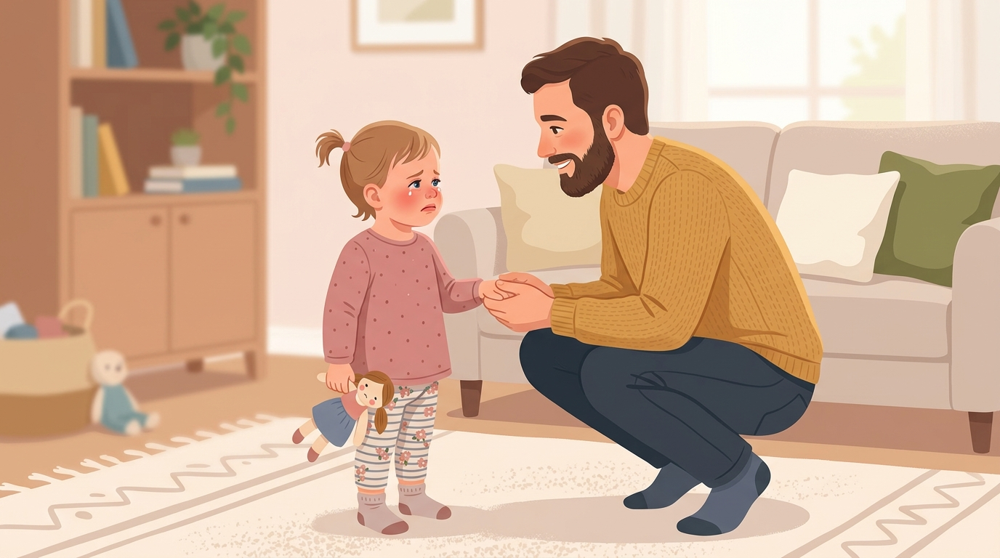
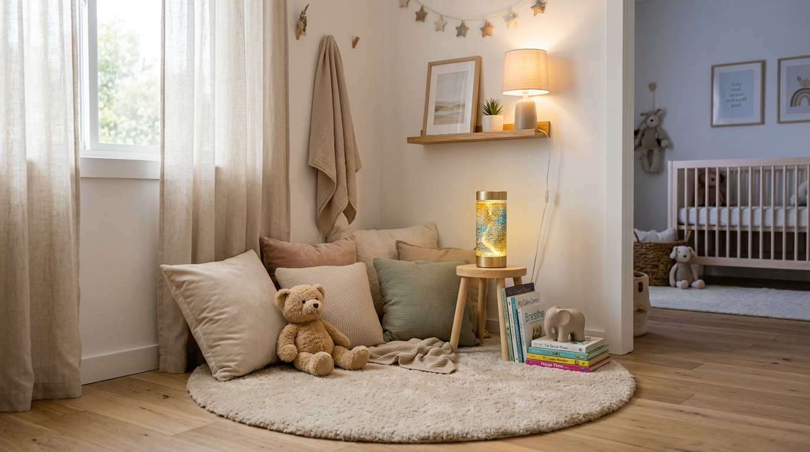
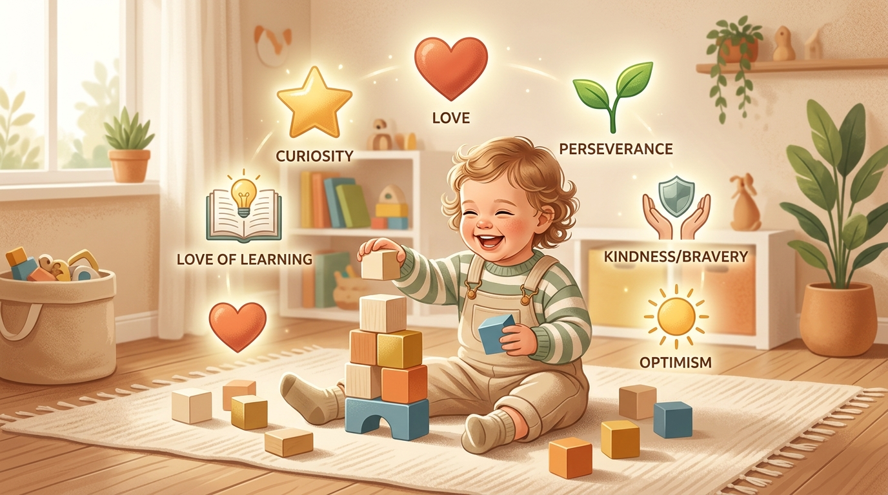

全書總覽與 19 個月教養核心定位

作者：姜天依｜武漢大學出版社（2026年1月）
體量：198頁、約 10.4 萬字
解讀對象：David & 太太，女兒 19 個月（1 歲 7 個月）
核心立場：不補短板，而是揚長處；不塑造，而是滋養。
女兒正處於1—3歲學步期（自主 vs 羞怯），自我意識萌芽、秩序敏感期高峰與分離焦慮期。全書 32 節中，有 11 節為 19 個月最高優先（P1），請優先執行！
園丁養育模型 ➔ 我們不是雕刻者，而是滋養者；
情緒教練模型 ➔ 我們不是滅火員，而是陪伴者；
優勢發現模型 ➔ 我們不是評判官，而是發現者。
📑 全書結構與 19 個月相關度總覽表
| 篇章 | 章節主題 | 19 個月優先度 | 關鍵落地動作 |
|---|---|---|---|
| 根基篇 | Ch 1-3 大腦窗口、園丁角色、情緒儀式 | 最高 (2.2/3.4) | 有限選擇、睡前儀式、 Serve & Return 發球回球 |
| 實踐篇 | Ch 4-8 積極回應、分離焦慮、情緒命名 | 最高 (4.1/4.2/5.1/6.1/6.2) | 絕不偷溜、觀察五秒不打擾、先接納後引導 |
| 進階篇 | Ch 9-11 特殊時光、家庭規則、優勢記錄 | 最高 (9.1) | 10分鐘沙漏特殊時光、正面家規、手機相簿法記錄優勢 |
序言與前言：懂比愛更重要
孩子把顏料塗滿整張桌子，老師沒有只說「隨你玩」，而是給了一個新身分（「色彩探索家」） + 新結構（限定兩種顏色、指定區域、水洗顏料）。
👉 關鍵公式：接納 + 結構 = 完整動作（只接納會變成放任）
推薦序點名的兩個賣點：「24項優勢信心建立法」與「加總分」理念，在正文中沒有獨立方法或完全未出現。閱讀時宜保持批判性。
處理一個你覺得是「破壞」的行為（扔食物、掏抽屜）。先做觀察：她在觀察什麼？重複哪個動作？換個名字記錄（「測試重力」），並給予一個安全的替代結構（專屬低櫃/倒東西箱）。
心理資本、大腦黃金窗口與園丁隱喻

內在安全感 (土壤)
樂觀解釋風格 (陽光)
成長型思維 (雨露)
壞事發生時往「暫時、特定、外在」歸因。
0-3 歲突觸爆發，3 歲起「用進廢退」修剪。 Serve & Return 發球-回球是核心互動。毒性壓力指長期忽視/暴力的壓力，日常哭鬧非毒性壓力。
木匠有藍圖，偏離即缺陷；園丁只負責土壤陽光水分。父母應從「塑造者」轉為「發現者」與「支持者」。
挑三個時段（換尿布、吃飯、洗澡），刻意做「發球-回球」：只要她發出聲音或指向物品，在 2 秒內回應（重複聲音、命名物品、模仿表情）。跟隨她的注意力！
1—3歲學步期：呵護自主感，巧妙設立邊界
孩子的「不！」不是變壞，而是自我意識的宣言。父母的角色從「守護神」轉為「引導者」，任務是在呵護自主感與設立安全邊界間找平衡。
不問「你要不要穿衣服」，問「你要穿紅色還是藍色」。選項由你設計，選擇權在她。19 個月選項必須是拿在手中的實物！
餅乾碎了就崩潰不是無理取鬧，是認定的完整被破壞。處理方式不是講理，是維持規律。心法：允許情緒，限制行為；共情先行，堅定隨後。
- 有限選擇每天三次：穿衣、吃飯碗、出門鞋（拿兩個實物供選）。
- 建立「替代清單」：對常說不可以的場景準備「但你可以...」（打人 ➔ 摸摸 / 拍枕頭）。
- 小幫手任務：髒衣服丟洗衣籃、放鞋子，做完真誠道謝。
- 三段式共情句型：「你很想要 ___，拿不到很生氣。爸爸知道。但是 ___ 不可以。我們可以 ___。」
- 固定三樣物品位置：她的杯子、鞋子、睡前玩偶。
- 戒除言語羞辱：絕不說「笨手笨腳」「再哭就不要你了」。
父母情緒管理、夫妻關係與家庭儀式
空杯子倒不出水。睡眠不足會使前額葉失控。練習 4-7-8 呼吸法：吸氣 4 秒、屏息 7 秒、呼氣 8 秒。認知重評：「她不是搞破壞，是在探索。」
對孩子最好的教育是父母相愛。避免「孩子中心主義」。目睹爭吵後必須在孩子面前和好（災後重建）。約定「減壓閥暗號」適時換手。
每週大餐不如每天高品質擁抱。設計睡前固定儀式、出門「魔法親吻」、每年 recorded 的「生日訪談」。
- 今晚開始睡前儀式：洗澡 ➔ 按摩 ➔ 繪本 ➔ 關燈 ➔ 愛的暗號。
- 夫妻黃金 15 分鐘：孩子睡後不滑手機、不談孩子，只聊彼此。
- 確立 3 條家規：與太太及照顧者（長輩/保母）一致。
積極回應 vs 寵溺：無條件接納情緒，有條件滿足訴求
「孩子不是被愛壞的，而是被混亂的規則和無效的管教慣壞的。」
回應的是「情緒與需求」，寵溺是滿足「所有行為訴求」。
幼兒前額葉未成熟，無法自我調節。父母的及時回應是外部調節器。無數次「被成功調節」的經驗會內化為自我調節能力。
積極回應 ➔ 跑到坑邊說「我看到你了，我在這裡，我會幫你出來」；
寵溺 ➔ 孩子哼一聲你就跳下去墊底甚至罵地面（取代了她的經驗）。
| 步驟 | 階段任務 | 19 個月具體動作 |
|---|---|---|
| 步驟 1 | 處理情緒 (下層大腦) | 蹲下平視 ➔ 命名情緒 ➔ 允許哭泣 (語言簡短，肢體為主) |
| 步驟 2 | 處理行為 (上層大腦) | 溫和堅定重申規則 ➔ 提供有限選擇 / 轉移注意力 |
抓一個常因哭吵而讓步的場景（如索要零食）。這次不改變規則，只改變回應方式：情緒全接住，規則不動！重複 50 次是正常成本，不是失敗。
分離焦慮的積極應對與可預測家庭環境
偷溜會造成嚴重的信任危機，導致孩子第二天更黏。寧可面對哭泣的告別，也不要無聲消失。
固定短小的再見儀式（如魔法親吻：在手心親一下印在孩子手心）。告別語言指向「未來的重聚」（「下午4點我會第一個接你」），而非當下的不捨。
1. 時間節奏（日常程序）
2. 物理環境（各歸其位、低矮收納）
3. 行為結果（清晰規則）
4. 情緒反應可預測（最重要！）
- 固定「魔法親吻」再見儀式，每次都用同一個。
- 準時回來時明確標記：「爸爸說會回來，爸爸回來了！」
- 外出帶上她的「安慰物」（行動安全基地）。
- 設定低矮玩具架，玩完帶她一起「送玩具回家」。
保護專注力：不打擾的藝術
專注力主要不是訓練出來的，是保護出來的。除非孩子主動邀請（抬頭看你、眼神邀請），否則任何介入都是打斷。
「渴不渴？喝口水」「熱不熱？」（在她正專注探索時中斷她）
「天空應該是藍色的」「這個積木應該放這裡」「快看那邊」
在旁邊充滿愛意地凝視、時不時摸頭——無形的「關注壓力」也是干擾。
選擇 ➔ 專注操作 ➔ 重複練習（同一個動作倒進倒出 20 次） ➔ 滿足收尾。
重複練習是工作，不是無聊！不要換掉它，不要「升級」它！
- 「觀察五秒原則」：想開口打擾前，先默數五秒！
- 全家統一共識：跟長輩溝通「她在工作」。
- 喝水/擦嘴/加外套集中在她自然收尾的空檔。
情緒命名與先接納後引導

下層大腦 (腦幹/邊緣系統) 負責原始情緒；上層大腦 (前額葉) 負責思考與調節。說出「你很生氣」，是在幫她吸引上層大腦工作！
杏仁核警報時，前額葉「掉線」，講理就像對著關機的電腦輸入指令。第一步針對下層大腦 (接納)；第二步針對上層大腦 (引導)。
當你觀察到孩子的 1. 哭聲逐漸減弱、2. 身體不再緊繃、3. 呼吸變得平穩 時，才是進入第二步引導的最佳時機！
「你看起來好像很 失望/著急/生氣，是因為 拿不到玩具，對嗎？」
語尾保持探詢上揚。19 個月重點詞彙：失望、挫折、著急、害怕、不舒服。
應對發脾氣的「積極暫停角」

必須在風平浪靜時共同搭建。切忌稱「冷靜角/反思椅」（負面暗示）；推薦「彩虹島」「太空艙」「心情加油站」。
1. 舒緩感官 (軟墊/亮片瓶)
2. 宣洩情緒 (捏捏樂/打枕頭)
3. 注意力轉移 (繪本/拼圖)
4. 安全感媒介 (全家福/抱抱熊)
19 個月還無法獨立去暫停角。現在主要作為「父母自己的暫停角」！當你快生氣時，說「爸爸需要去冷靜一下」，示範吹亮片瓶/深呼吸，這是最好的身教。
物權意識、允許犯錯與「暫未」的力量
「我的」是自我邊界的確立。強迫分享是在破壞邊界。輪流比分享容易，沙漏/計時器比說理有效。
打翻牛奶不是道德問題。遞給她抹布，一起擦乾淨！ 讓她體驗到「事情弄糟了可以修復」，而非恐懼被罵。
把目標拆成小步驟。把「我不會」改成「我暫時還不會」。19 個月降難度：用短柄粗湯匙、魔鬼氈鞋。
- 開始明確宣示界線：「這是女兒的杯子」「這是爸爸的手機」。
- 打翻東西時不吼叫，平靜說「牛奶灑了，我們拿抹布擦擦」，遞給她抹布共同清理。
放下手機：全身心投入的「特殊時光」
質量遠重於數量。這段時間是孩子的「心理安全感加油站」。
1. 命名與預告：「這是我們的特殊時光！」
2. 孩子主導：她選玩什麼、怎麼玩
3. 零干擾：手機放別房、關掉電視
4. 不做考官，當解說員：「你正在把紅積木放最上面」＞「這是什麼顏色？」
共建者而非朗讀者。19 個月接受「不照順序翻」「讀半本就跑」。重點是互動與表情指認（「你看小熊在哭」）。
準備一個 10 分鐘沙漏。每天固定時間（如晚飯後），手機放遠，告訴她「現在是我們的特殊時光」，完全跟隨她的指令玩！
積極家庭規則、4R 結果與代替吼叫話術
大腦難以處理「不」。重寫規則：
❌ 不許打人 ➔ 🟢 我們用溫柔的手
❌ 不許爬茶几 ➔ 🟢 我們的腳走在地上
❌ 吃飯別亂跑 ➔ 🟢 吃飯坐在餐椅上
邏輯結果需滿足 4R (Related, Respectful, Reasonable, Revealed in advance)。
⚠️ 19 個月警告：邏輯結果在此年齡基本無效！此階段靠環境設計、預告轉移與物理帶離。
若不小心吼了，請在 3 分鐘內做關係修復三步：
1. 為自己情緒負責（「媽媽剛才大吼是我的問題，對不起」）
2. 重新連接（「我生氣的是行為，但我永遠愛你」）
3. 共同復盤。
用正面語言寫下 3 條家規，印出圖片貼在牆上（18個月看得懂圖片）。
發現孩子的天賦：VIA 24 項性格優勢

把問題行為轉化為優勢：
- 「固執」背後是 ➔ 毅力
- 「拆玩具破壞」背後是 ➔ 好奇心
- 「沒大沒小」背後是 ➔ 誠實
- 「挑食聞食物」背後是 ➔ 審慎
建立「優勢瞬間」相簿，每張加一句備註（時間+行為+優勢名稱）。80% 的讚美與精力投資在優勢上 (Ch 11.3)。
建立手機「優勢瞬間」相簿。觀察她進入新環境的第一個動作（「她如何開始」：衝進去 / 先看 / 找你），這是氣質的原始資料！
全書三大總結模型 (一頁式心法)
🌳 模型一：「園丁養育」生態系統模型
| 層次 | 核心內容 | 對應章節 |
|---|---|---|
| 肥沃的土壤 | 安全與連接 (內在安全感、積極回應、夫妻關係) | Ch 4 安全感 / Ch 3 夫妻關係 |
| 穩固的根系 | 內在力量 (情緒管理、抗挫力、優勢發現) | Ch 6 情緒 / Ch 8 堅毅 / Ch 11 優勢 |
| 綻放的花朵 | 外顯行為 (好奇心、社交力、熱愛學習) | Ch 5 好奇心 / Ch 7 社交力 |
| 氣候與園丁 | 家庭環境與父母角色 (情緒管理、溝通、儀式) | Ch 3 父母自我關懷與儀式 |
🚦 模型二：情緒管理「三步走」教練模型
| 步驟 | 行動內容 | 標準話術 | 19 個月適用度 |
|---|---|---|---|
| ① 降溫 | 蹲下、擁抱、共情命名情緒 | 「你非常生氣，因為……對嗎？」 | 完全適用 (極致做) |
| ② 復盤 | 平復後共同回顧事件 | 「剛才發生了什麼？」 | 延後 (約 3 歲) |
| ③ 解決 | 共同探討方案或規則 | 「下次可以怎麼做？」 | 延後 (約 3 歲) |
🔄 模型三：優勢發現與滋養循環模型
附錄 1：家庭積極情緒小遊戲 10 例
| # | 遊戲名稱 | 訓練目標 | 19 個月適用度 |
|---|---|---|---|
| 1 | 情緒面具變變變 | 識別與表達基本情緒 | ✅ 現在就能玩 (互猜表情) |
| 2 | 最愛時刻「玫瑰」分享 | 感恩與樂觀思維 | △ 父母代述（「今天最開心是溜滑梯嗎？」） |
| 3 | 愛的轟炸 | 自尊與被愛感 | ✅ 聽得懂語氣與擁抱 |
| 4 | 勇氣歌 | 克服小恐懼 | ✅ 打針、看醫生前特別有效！ |
| 5 | 發現美的「尋寶」之旅 | 培養欣賞美 | ✅ 簡化成「找一個紅色的」 |
| 6 | 哈哈鏡模仿秀 | 釋放情緒、體驗快樂 | ✅ 這個年齡最愛！ |
| 7 | 感恩石 | 練習感恩 | △ 父母先示範 |
| 8 | 「吹走」壞情緒 | 深呼吸遊戲化 | ✅ 用力吹手心壞情緒 |
| 9 | 優勢超人之帽 | 自我認同 | △ 約 2.5 歲 |
| 10 | 家庭擁抱隧道 | 催產素速效藥 | ✅ 搭手成隧道鑽過拿擁抱 |
附錄 2：8 大高頻衝突場景急救話術對照
全書存疑清單與學術文獻檢視 (Fact-Check)
全書參考文獻僅 6 筆暢銷書中譯本，無任何一篇學術論文。書中通篇出現「哈佛/耶魯/劍橋/斯坦福研究顯示+精確百分比」，在參考文獻中無對應來源。建議把帶百分比的研究結論當作方向性提示，不引用數字！
| # | 書中主張與數據 | 真實學術視角與問題 |
|---|---|---|
| 1 | 哈佛：1-3歲探索前額葉神經連接密度提升 20% | 神經連接密度無法在活體兒童身上這樣測量。數據高度可疑。 |
| 2 | 斯坦福 Dweck 團隊 5 年追蹤，成長型思維數學提升 15% | 最接近研究為 2 年縱向介入 (Blackwell 2007)。Sisk et al. (2018) 統合分析顯示成長型思維介入效果極小。勿當決定性變數自責。 |
| 3 | 3000 萬詞彙差距 (Hart & Risley) | Sperry et al. (2018) 指出原研究樣本僅 42 戶，且低估低收入家庭語言多樣性。方向站得住，數字勿引用。 |
| 4 | AAP 0-12個月每秒 700-1000個連接 | 與第 1.2 節「每秒上百萬個」相差三個數量級，書中內部矛盾。 |
| 5 | 溫尼科特「60分媽媽」 | 原概念為 "Good enough mother" (足夠好的母親)，非60分。原意為「恰到好處的不完美」提供獨立契機。 |
| 6 | 正面管教 4R 與暫停角來源缺失 | 源自 Jane Nelsen《正面管教》(Adler-Dreikurs學派)。書中未標註出處。方法有效，但需了解來源。 |
19 個月女兒專屬落地行動清單
🔥 第一優先：本週就開始 (投報率最高 6 項)
| # | 行動項目 | 章節出處 |
|---|---|---|
| 1 | 「觀察五秒」——想打斷她之前先默數五秒 | Ch 5.1 |
| 2 | 情緒命名：崩潰第一句說「你看起來很 ___」，語尾上揚 | Ch 6.1 |
| 3 | 積極回應兩步驟：先接情緒（等哭聲減弱呼吸平穩），再守規則 | Ch 4.1/6.2 |
| 4 | 「特殊時光」10分鐘：沙漏計時、手機放別房、她主導你當解說員 | Ch 9.1 |
| 5 | 固定睡前儀式 + 愛的暗號 | Ch 3.4/4.3 |
| 6 | 絕不偷偷溜走 + 魔法親吻再見儀式 | Ch 4.2 |
⭐ 第二優先：本月內導入 (8 項)
7. 有限選擇 (每天三次拿實物)｜8. 正面語言重寫 3 條家規貼牆｜9. 全體照顧者口徑統一｜10. 遊戲化取代講理 (刷牙/洗澡/出門)｜11. 低矮玩具架「送玩具回家」｜12. 簡化工具 (粗握把湯匙/魔鬼氈鞋)｜13. 夫妻黃金15分鐘｜14. 打翻東西遞抹布一起擦。
💡 第三優先：本季內建立習慣 (11 項)
15. 手機建「優勢瞬間」相簿加備註｜16. 觀察「她如何開始」氣質資料｜17. 記錄自己發火前置條件模式｜18. 描述具體動作稱讚｜19. 創意角落感官塗鴉｜20. 低結構材料替換 (積木/紙箱/水/沙)｜21. 保護每天自由時間｜22. 繪本指認表情｜23. 父母自己的暫停角示範｜24. 錄第一支「生日訪談」｜25. 明確宣示「這是誰的」。
「暫未」句型 (需會說我不會)、完整積極暫停角 (需3歲)、邏輯結果 4R (需3歲)、衝突解決三步法 (需3歲)、C2Q 追問 (需3歲)、家庭會議發言棒 (需3-4歲)。
結論：給 David 的育兒金句與宣告
我關注的不是你比別人欠缺了什麼，而是你獨一無二的閃光點。
我的夢想不是把你塑造成我想像中的樣子，而是守護你，成為你本該成為的自己。」
- 懂 > 愛：愛是本能，懂是本領。
- 園丁 ≠ 放任：接納 + 結構才是完整動作。
- 滋養者、陪伴者、發現者，而非雕刻者與滅火員。
- 先給自己澆水：睡滿 6 小時優先於所有技巧。
- 頻率 > 規模：每天一個高品質擁抱勝過每週大餐。
- 吼完後的三分鐘，才是真正的教育發生的地方！